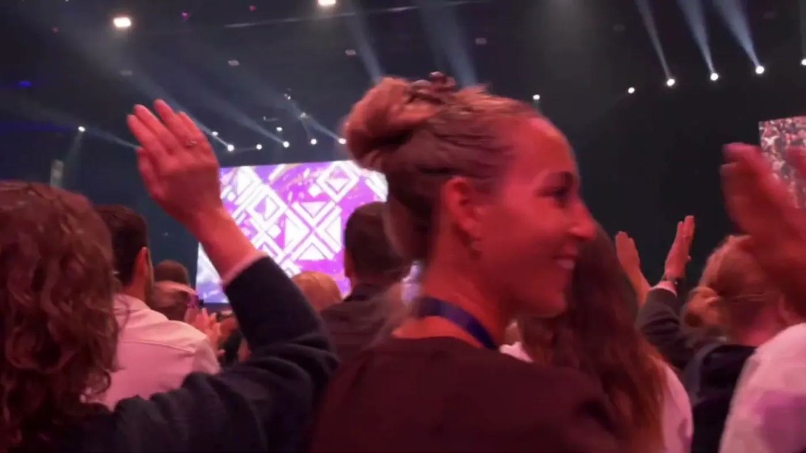
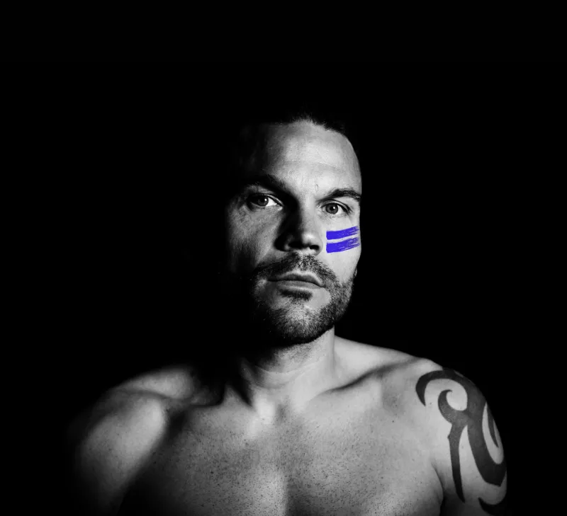
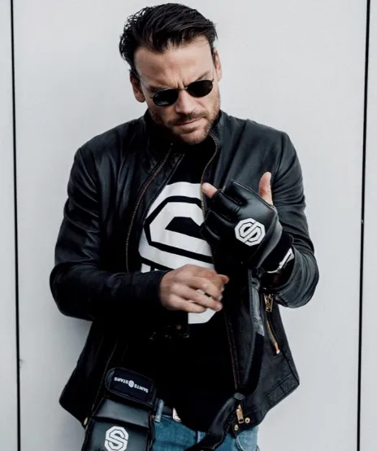
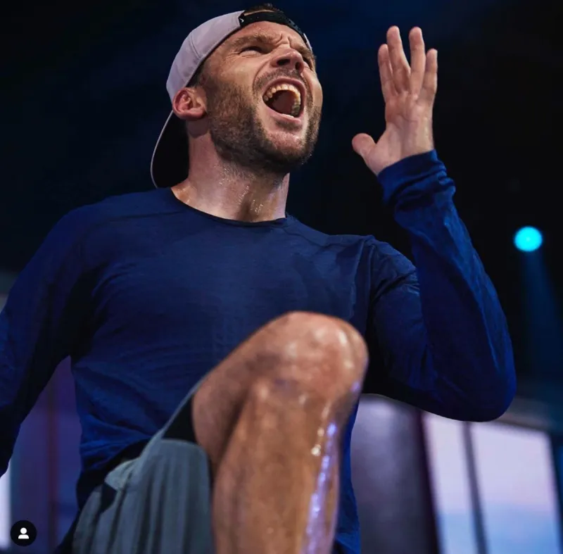
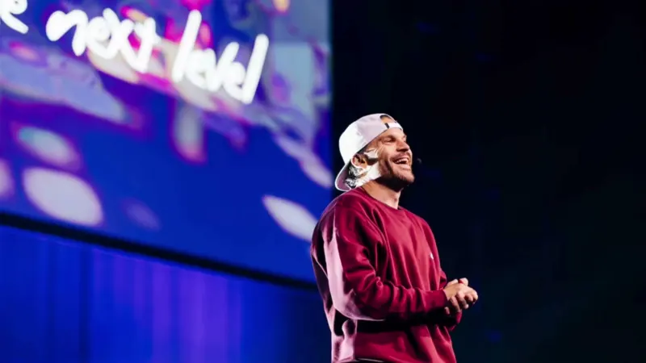
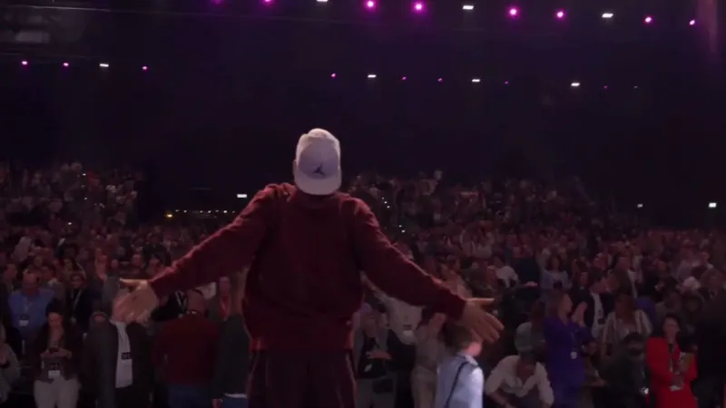

Over Larz
Dertig jaar energie, van studio tot arena
Lars Schuijling gaf op zijn vijftiende zijn eerste les. Vandaag staat hij als Larz op de grootste podia van Nederland, met Nike achter zich en zijn eigen muziek onder zich.

The Energy Man
Trainer, presentator, dj. In die volgorde begonnen
Larz begon als tiener met lesgeven en ontwikkelde zich tot een van de bekendste groepsfitnesspresenters van Nederland. Hij reisde ruim twintig jaar met zijn lessen langs conventies in binnen- en buitenland, voor groepen van vijftig tot tienduizend mensen.
Nike koos hem als Master Trainer en vaste coach bij Nike Training. Bij Saints & Stars, een van de meest toonaangevende boutique gyms van Europa, is hij Star Trainer. En omdat hij ook produceert en draait, klinkt een les of event van Larz anders dan bij wie dan ook.
- Nike Master Trainer en coach bij Nike Training
- Star Trainer bij Saints & Stars Amsterdam
- Dj, producer en oprichter van The Energy Lab
- Formats: NTC, Step V2, HIIT, bootcamp en dance
Erkenning
Wat de branche van hem vindt
In zijn eigen woorden
"A tough workout combined with a lot of fun and happiness and a crazy amount of energy. That is, in a nutshell, my type of workout."
Larz, op zijn trainerpagina bij Saints & Stars
Ook te zien
- Choreografie en coaching voor tv-programma's als Idols en So You Think You Can Dance
- Docent aan Lucia Marthas Institute for Performing Arts
- Presentaties voor Nike, adidas en Puma
- Eigen YouTube-serie met Larz Energy Home Workouts
Van dichtbij
Dezelfde energie, elke zaal






